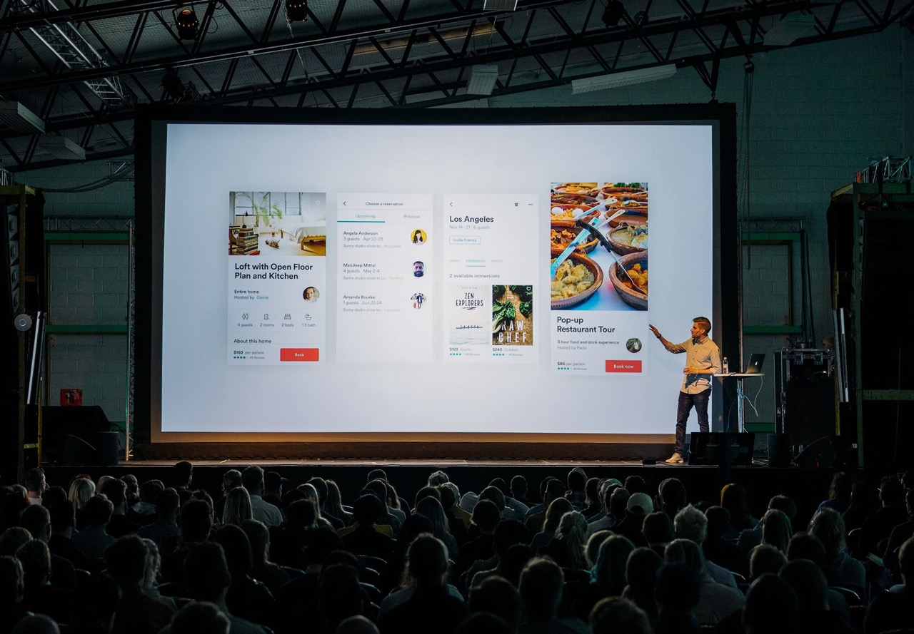
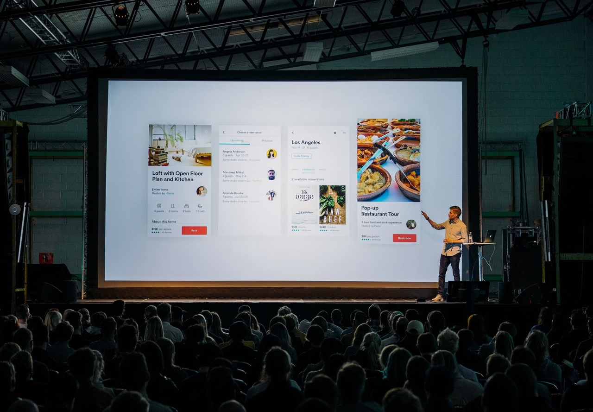

History of TechCon
TechCon started in 2020 as a small gathering of tech enthusiasts. Over the years, it has evolved into one of the largest tech conferences in the world, attracting thousands of attendees from various industries.
TechCon started in 2020 as a small gathering of tech enthusiasts. Over the years, it has evolved into one of the largest tech conferences in the world, attracting thousands of attendees from various industries.

The mission of TechCon is to foster innovation, inspire creativity,
and drive progress in the tech industry. We aim to provide a platform
for knowledge sharing, networking, and collaboration among tech
enthusiasts and professionals.
At TechCon, we believe in the power of technology to transform lives
and create a better future. Our goal is to support and showcase the
best and brightest minds in tech.
Over the years, TechCon has hosted many notable speakers who have made significant contributions to the tech industry. Here are a few of them:

Jane Buck is an AI specialist known for her groundbreaking work in machine learning and artificial intelligence. She has been a keynote speaker at TechCon multiple times, sharing her insights on the future of AI.
Steven Smith is a cybersecurity expert with over 20 years of experience in the field. His talks at TechCon have focused on the importance of cybersecurity in the modern digital age.
Dan Johnson is a robotics engineer who has been at the forefront of developing innovative robotic solutions. His sessions at TechCon have inspired many to explore the possibilities of robotics.